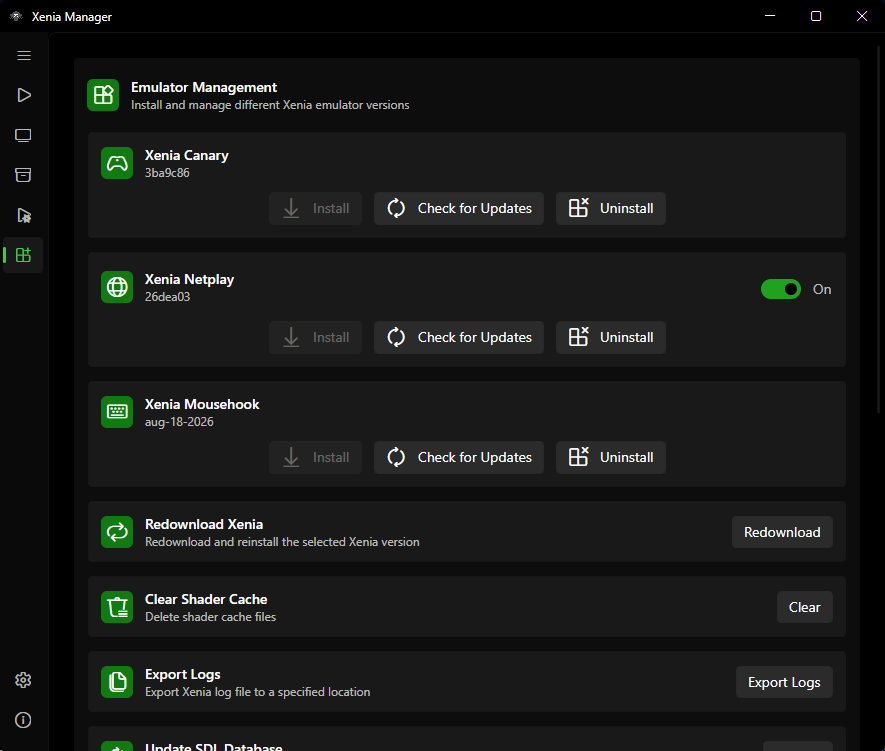

Manage Xenia¶
The Manage page installs, updates, and repairs the actual emulator builds. Xenia Manager itself is only a launcher - the games run inside one of the Xenia variants installed here.

Variants¶
| Variant | Executable | Config file | Extra file | When to install it |
|---|---|---|---|---|
| Xenia Canary | xenia_canary.exe |
xenia-canary.config.toml |
- | Default for almost every game |
| Xenia Mousehook | xenia_canary_mousehook.exe |
xenia-canary-mousehook.config.toml |
bindings.ini |
Games with keyboard-and-mouse support (see Mousehook) |
| Xenia Netplay | xenia_canary_netplay.exe |
xenia-canary-netplay.config.toml |
- | Games with online multiplayer support |
| Custom | you pick the .exe |
alongside it | - | Pinning a specific build for one game (set per game in the Details editor) |
You can install any combination - they coexist. Each game remembers which variant it launches with (xenia_version in games.json).
Custom builds¶
Custom is not installed here - it is a per-game override pointing at any .exe on disk (set in the Details editor, stored as custom_emulator_executable). At launch the Manager runs that exe directly from its own folder and skips managed config swapping, patch disable/restore, save backup, and playtime-adjacent config saves. Use it to pin a specific build for one game; prefer a managed variant for everything else.
Emulator Folder Layout¶
Each variant lives under Emulators/<Variant>/ next to XeniaManager.exe:
Emulators/
Xenia Canary/
xenia_canary.exe
xenia-canary.config.toml # default config (Manager may move active config to config/)
config/ # active per-game/global configs
content/ # DLC/TU (or shared Emulators/Content/ when unified - see below)
patches/ # enabled .patch.toml files for this variant
screenshots/ # Xenia's own screenshots
xenia.log # per-emulator log
gamecontrollerdb.txt # SDL controller mappings (auto-refreshed)
xconfig.settings
Xenia Mousehook/
xenia_canary_mousehook.exe
bindings.ini # mouse/keyboard bindings
...
Xenia Netplay/
...
Content/ # shared content folder, only when "unified content" is on
Warning
Do not rename executables or move files out of these folders by hand. The Manager locates the emulator by these exact paths. If you must intervene, use the repair/reinstall actions on the Manage page.
Installing and Updating¶
First install (1-click setup)¶
- Open the Manage page.
- Click Install next to the variant you want (start with Canary).
- The Manager downloads the build into
Downloads/, extracts it intoEmulators/<Variant>/, writes the default config, and refreshesgamecontrollerdb.txt. - The row updates to show the installed version number.
gamecontrollerdb.txt (SDL controller mappings, from Urls.GameControllerDatabase) is refreshed from the network on install so gamepad input - including BigScreen navigation - keeps working with new controllers. Do not hand-edit it; it is overwritten on reinstall/update.
Stable vs. nightly (Netplay only)¶
Only Netplay has a channel toggle: each Netplay install tracks a stable version and a nightly version, with a Use nightly build switch in its card header:
- Stable - less frequent, more tested snapshots.
- Nightly - bleeding-edge builds with the latest fixes (and the latest regressions). Prefer nightly when a game was fixed upstream yesterday, stable when you value consistency.
Canary and Mousehook track a single channel each. The Netplay current version is whichever channel is selected.
Updates¶
- Automatic checks: when update checking is enabled (see Manager Settings), the Manager compares your installed version against the version manifest on startup and badges the Manage page when an update is available (
update_availableflag +last_update_check_dateper variant). - Manual check: use the Check-for-updates action on the Manage page.
- Apply update: click Update; the Manager downloads and swaps the build while preserving your
config/,content/, andpatches/folders.
Repair and uninstall¶
- Repair / Reinstall re-downloads the current build without wiping configs or content. Use it when the executable is missing, crashes on startup for every game, or antivirus quarantined files.
- Uninstall / Delete removes the variant folder. Games assigned to that variant will fail to launch until you reassign them in the Details editor. Content installed in unified mode survives (it lives outside the variant folder - see below).
Maintenance actions¶
The Manage page also offers, per installed variant:
- Redownload - re-downloads an installed emulator build. If several variants are installed, a picker asks which one to redownload.
- Clear shader cache - deletes cached shaders when visuals glitch after an update.
- Export logs - copies the variant's
xenia.logto a folder you choose (timestamped asxenia-canary-<timestamp>.log,xenia-mousehook-<timestamp>.log, orxenia-netplay-<timestamp>.logdepending on the variant) for bug reports (same files as Troubleshooting). - Update SDL database - re-downloads
gamecontrollerdb.txtfor every installed variant. - Redownload bindings (Mousehook only) - restores the default
bindings.ini.
Unified content folder: admin requirement¶
The Unified content folder toggle requires running as Administrator on an NTFS drive (it works via symlinks; the toggle is disabled otherwise). Toggling migrates your content automatically - unifying copies the selected variant's content into the shared folder and symlinks each variant to it, separating copies it back - after asking which variant's content to use as the base. Verify the result in the Content Viewer.
XConfig Editor (Dashboard Settings)¶
The Manage page also has an Edit XConfig Settings card. It edits the Xbox 360 dashboard settings stored in xconfig.settings - resolution, language, online country, and default profile - via XConfigManager. It operates per installed variant and is separate from the .toml-based Xenia Settings.
Settings That Affect This Page¶
- Unified content folder (
Emulator → Unified content, default off): when on, DLC/TU go intoEmulators/Content/shared by all variants instead of each variant's owncontent/folder. Enable it if you run the same DLC across Canary and Netplay and do not want duplicates. See Content. - Check for updates on startup and Use experimental build (Manager-level): see Manager Settings.
- Automatic profile save backup and Profile XUID: these live next to the emulator settings but are documented in Profiles & Saves.
Troubleshooting¶
- Install button does nothing / download fails - check your connection and retry; downloads stage in
Downloads/so a partial file may need deleting. See Troubleshooting. - Antivirus flags the emulator - emulator builds are occasionally false-positive flagged. Restore/quarantine-exempt the
Emulators/folder, then Repair. - Game launches the wrong variant - the per-game
xenia_versionoverrides the default. Fix it in the Game Details Editor, not by reinstalling.